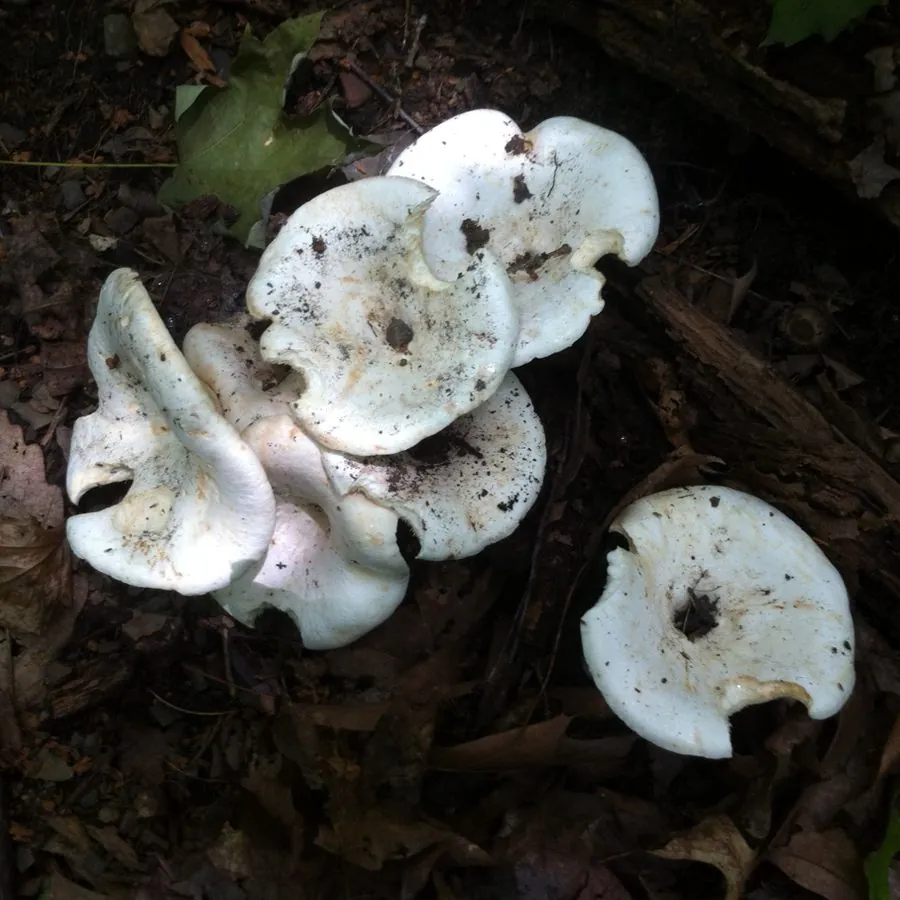

真菌 · 真菌界
白乳菇 Lactarius piperatus

通体白色、乳汁辛辣的乳菇，常成群生长在阔叶林下，虽然可食但辛辣味重，需反复处理，不熟悉者不要采食。
- 分类
- 门担子菌门纲伞菌纲目红菇目科红菇科属乳菇属
- 栖息环境
- 阔叶林和针阔混交林的地面，与栎树等树木形成外生菌根
- 地理分布
- 欧洲、北美和东亚广泛分布，中国南方和北方林区均有记录
- 保护级别
- 暂无评估（IUCN 未评估，中国未列入重点保护名录）
物种志
白乳菇是担子菌门红菇目的外生菌根真菌，子实体单生或群生。菌盖呈半球形至平展并中央下凹，直径 5–15 cm，表面白色至乳白色，光滑而略干；菌肉白色，受伤后流出白色乳汁，味道辛辣；菌褶白色至淡黄色，密集；菌柄白色，粗短而中实；孢子印白色。
白乳菇与栎树等阔叶树形成外生菌根，多生于阔叶林和混交林的地面，夏秋季出菇，在欧洲、北美和东亚广泛分布，中国南方和北方都有记录。它含有辛辣的乳汁，直接炒食味道刺激，民间常通过反复水煮、浸泡去除辛辣味后食用。由于处理不当可能引起肠胃不适，不熟悉野生菌的人不要采食，采摘时要与有毒的白色菌类区分。
形态与习性
- 菌盖直径 5–15 cm，白色至乳白色
- 菌肉受伤后流出白色辛辣乳汁
- 菌褶白色至淡黄色，密集
- 菌柄白色，粗短而中实
- 孢子印白色
- 食用性可食但辛辣，需反复水煮浸泡处理
趣味知识
- 白乳菇的乳汁味道非常辛辣，直接炒食会刺激口腔。
- 民间常把白乳菇反复水煮、浸泡后再食用，以去除辛辣味。
- 处理不当可能引起肠胃不适，不熟悉野生菌的人不要采食。